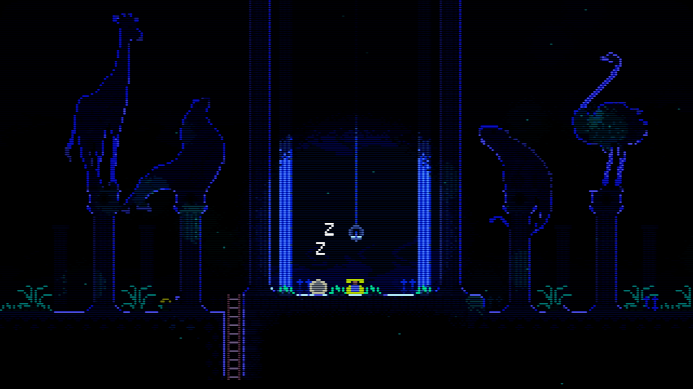
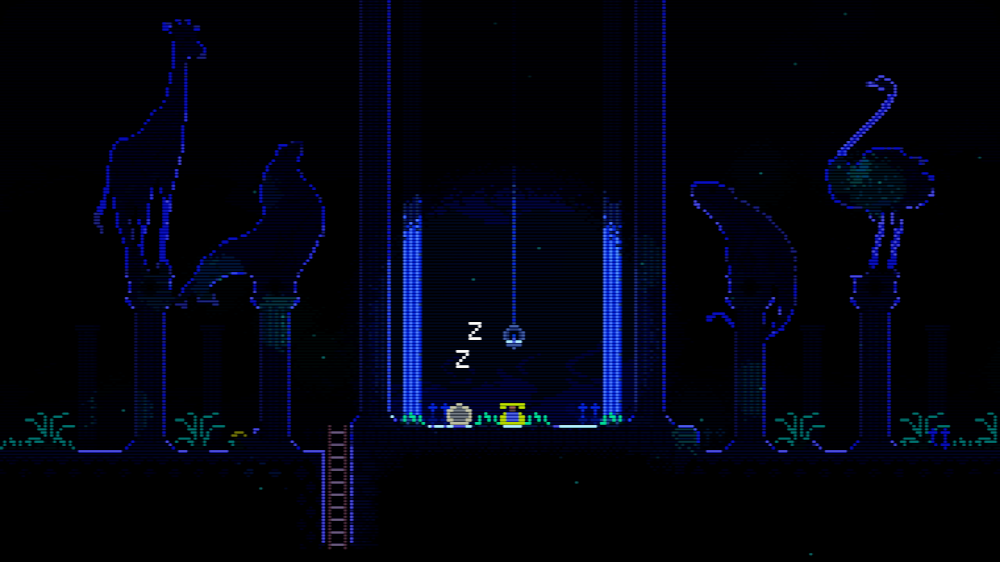

ANIMAL WELL
Peel back the layers of a strange and indifferent world. Collect artifacts that may or may not help you progress. Dense with mystery, life, and otherness — there are some things that may remain hidden forever.
Animal Well is been being solo developed by Billy Basso since late 2017. It takes inspiration from the survival horror genre, old PC adventure games, and Nintendo classics such as original Zelda and Metroid. It uses a custom engine, with everything being developed completely from scratch.
Estimated release date: Winter 2022
Platforms: Not yet announced
- Explore a dense atmospheric puzzle box world with multiple layers of secrets to uncover.
- Completely custom engine/rendering build from scratch -- Animal Well looks and plays like no other game
- Something about the game being scary (both beautiful and dimented)
- Collect unique items that allow you to manipulate the environment in suprising ways.
- a mashup of all the best elements from adventure/horror/puzzle/platforming
Animal Well is a game that intends to be playable and giving back far into the future. It will be a complete, self-contained world.
It will never depend on any updates, dlc, or an internet connection. When you aquire a copy, you're receiving an artifact with dormant secrets, that may never come to light.
 
